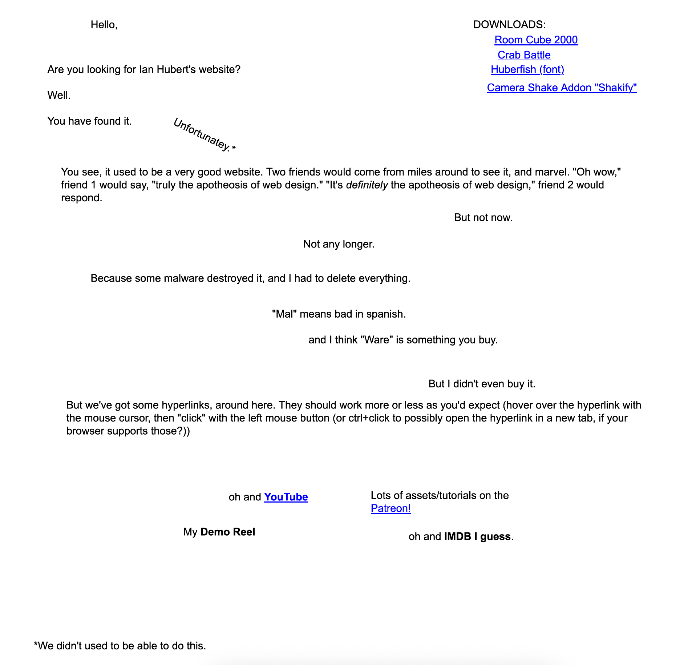

<!DOCTYPE html>
<html lang="en">
<head>
    <meta charset="utf-8" />
    <meta name="viewport" content="width=device-width, initial-scale=1.0, maximum-scale=1.0, user-scalable=no" />

    <title></title>
    <link rel="stylesheet" href="dist/reset.css">
    <link rel="stylesheet" href="dist/reveal.css" />
    <link rel="stylesheet" href="css/slides-extended.css" />
    <link rel="stylesheet" href="css/reveal-theme.css" id="theme" />
    <link rel="stylesheet" href="plugin/highlight/monokai.css" />
    <link rel="stylesheet" href="plugin/customcontrols/style.css">


    <script defer src="dist/fontawesome/all.min.js"></script>
    <script defer src="plugin/load-mathjax.js"></script>

    <script type="text/javascript">
        function pageInIframe() {
            return (window.location !== window.parent.location);
        }

        let forgetPop = true;
        function onPopState(event) {
            if(forgetPop){
                forgetPop = false;
            } else if( pageInIframe()) {
                parent.postMessage(event.target.location.href, "app://obsidian.md");
            }
        }
        window.onpopstate = onPopState;
        window.onmessage = event => {
            if(event.data == "reload"){
                window.document.location.reload();
            }
            forgetPop = true;
        }

        function fitElements() {
            const itemsToFit = document.getElementsByClassName('fitText');
            for (const item in itemsToFit) {
                if (Object.hasOwnProperty.call(itemsToFit, item)) {
                    const element = itemsToFit[item];
                    fitElement(element, 1, 1000);
                    element.classList.remove('fitText');
                }
            }
        }

        function fitElement(element, start, end) {

            let size = (end + start) / 2;
            element.style.fontSize = `${size}px`;

            if (Math.abs(start - end) < 1) {
                while (element.scrollHeight > element.offsetHeight) {
                    size--;
                    element.style.fontSize = `${size}px`;
                }
                return;
            }

            if (element.scrollHeight > element.offsetHeight) {
                fitElement(element, start, size);
            } else {
                fitElement(element, size, end);
            }
        }

        document.onreadystatechange = () => {
            fitElements();
            if (document.readyState === 'complete') {
                if (pageInIframe() && window.location.href.indexOf("?export") != -1){
                    parent.postMessage(event.target.location.href, "app://obsidian.md");
                }
                if (window.location.href.indexOf("print-pdf") != -1){
                    let stateCheck = setInterval(() => {
                        clearInterval(stateCheck);
                        window.print();
                    }, 250);
                }
            }
        };
    </script>
</head>

<body>
    <div class="reveal">
        <div class="slides"><section  data-markdown><script type="text/template"><!-- .slide: class="drop" template="" -->
<div class="" style="position: absolute; left: 0px; top: 0px; height: 700px; width: 960px; min-height: 700px; display: flex; flex-direction: column; align-items: center; justify-content: center" absolute="true">

# The Indie Web

_Day 7: WEB2025_
</div></script></section><section  data-markdown><script type="text/template"><!-- .slide: class="drop" template="" -->
<div class="" style="position: absolute; left: 0px; top: 0px; height: 700px; width: 960px; min-height: 700px; display: flex; flex-direction: column; align-items: center; justify-content: center" absolute="true">

### This class is not about flexbox or CSS grid or margins or paddings or any of that


<!-- .element: class="fragment" -->
</div></script></section><section  data-markdown><script type="text/template"><!-- .slide: class="drop" template="" -->
<div class="" style="position: absolute; left: 0px; top: 0px; height: 700px; width: 960px; min-height: 700px; display: flex; flex-direction: column; align-items: center; justify-content: center" absolute="true">


</div></script></section><section  data-markdown><script type="text/template"><!-- .slide: class="drop" template="" -->
<div class="" style="position: absolute; left: 0px; top: 0px; height: 700px; width: 960px; min-height: 700px; display: flex; flex-direction: column; align-items: center; justify-content: center" absolute="true">

## This class is about creating a space for ourselves

Whatever it is that space looks like.
</div></script></section><section  data-markdown><script type="text/template"><!-- .slide: class="drop" template="" -->
<div class="" style="position: absolute; left: 0px; top: 0px; height: 700px; width: 960px; min-height: 700px; display: flex; flex-direction: column; align-items: center; justify-content: center" absolute="true">

## Let us look at some manifestos by real people on the web
</div></script></section><section  data-markdown><script type="text/template"><!-- .slide: class="drop" template="" -->
<div class="" style="position: absolute; left: 0px; top: 0px; height: 700px; width: 960px; min-height: 700px; display: flex; flex-direction: column; align-items: center; justify-content: center" absolute="true">

<split even gap="2">

<div>

> Social networks standardised people and their way to think and talk. It's not a conspiracy theory but a matter of fact. We're loosing our originality.

https://darkmiryam.neocities.org/manifesto

</div>


</split>
</div></script></section><section  data-markdown><script type="text/template"><!-- .slide: class="drop" template="" -->
<div class="" style="position: absolute; left: 0px; top: 0px; height: 700px; width: 960px; min-height: 700px; display: flex; flex-direction: column; align-items: center; justify-content: center" absolute="true">

<split even gap="2">

<div>

> Ever since Youtube video makers went “professional”, it’s been nothing but CONTENT CONTENT CONTENT. It doesn’t have to be interesting, it just has to be more than 10 minutes and have an audience that will be entertained by it; It rewards the uploading of junk.

https://bl-world.neocities.org/writings/blog1

</div>


</split>
</div></script></section><section  data-markdown><script type="text/template"><!-- .slide: class="drop" template="" -->
<div class="" style="position: absolute; left: 0px; top: 0px; height: 700px; width: 960px; min-height: 700px; display: flex; flex-direction: column; align-items: center; justify-content: center" absolute="true">


https://itsevergreen.rip/manifesto/
</div></script></section><section  data-markdown><script type="text/template"><!-- .slide: class="drop" template="" -->
<div class="" style="position: absolute; left: 0px; top: 0px; height: 700px; width: 960px; min-height: 700px; display: flex; flex-direction: column; align-items: center; justify-content: center" absolute="true">


</div></script></section><section  data-markdown><script type="text/template"><!-- .slide: class="drop" template="" -->
<div class="" style="position: absolute; left: 0px; top: 0px; height: 700px; width: 960px; min-height: 700px; display: flex; flex-direction: column; align-items: center; justify-content: center" absolute="true">

### This class is not about flexbox or CSS grid or margins or paddings or any of that


It is modelled on the belief that it is a moral imperative to have your own space. It is a small form of resistance.
</div></script></section><section  data-markdown><script type="text/template"><!-- .slide: class="drop" template="" -->
<div class="" style="position: absolute; left: 0px; top: 0px; height: 700px; width: 960px; min-height: 700px; display: flex; flex-direction: column; align-items: center; justify-content: center" absolute="true">

## Code is incidental
</div></script></section><section  data-markdown><script type="text/template"><!-- .slide: class="drop" template="" -->
<div class="" style="position: absolute; left: 0px; top: 0px; height: 700px; width: 960px; min-height: 700px; display: flex; flex-direction: column; align-items: center; justify-content: center" absolute="true">

## If it is incidental, why are we focusing on it?

Could I not have my own space in an easier way?
</div></script></section><section  data-markdown><script type="text/template"><!-- .slide: class="drop" template="" -->
<div class="" style="position: absolute; left: 0px; top: 0px; height: 700px; width: 960px; min-height: 700px; display: flex; flex-direction: column; align-items: center; justify-content: center" absolute="true">

## It is better to own rather than rent
</div></script></section><section  data-markdown><script type="text/template"><!-- .slide: class="drop" template="" -->
<div class="" style="position: absolute; left: 0px; top: 0px; height: 700px; width: 960px; min-height: 700px; display: flex; flex-direction: column; align-items: center; justify-content: center" absolute="true">


</div></script></section><section  data-markdown><script type="text/template"><!-- .slide: class="drop" template="" -->
<div class="" style="position: absolute; left: 0px; top: 0px; height: 700px; width: 960px; min-height: 700px; display: flex; flex-direction: column; align-items: center; justify-content: center" absolute="true">


</div></script></section><section  data-markdown><script type="text/template"><!-- .slide: class="drop" template="" -->
<div class="" style="position: absolute; left: 0px; top: 0px; height: 700px; width: 960px; min-height: 700px; display: flex; flex-direction: column; align-items: center; justify-content: center" absolute="true">


</div></script></section><section  data-markdown><script type="text/template"><!-- .slide: class="drop" template="" -->
<div class="" style="position: absolute; left: 0px; top: 0px; height: 700px; width: 960px; min-height: 700px; display: flex; flex-direction: column; align-items: center; justify-content: center" absolute="true">


</div></script></section><section  data-markdown><script type="text/template"><!-- .slide: class="drop" template="" -->
<div class="" style="position: absolute; left: 0px; top: 0px; height: 700px; width: 960px; min-height: 700px; display: flex; flex-direction: column; align-items: center; justify-content: center" absolute="true">


</div></script></section><section  data-markdown><script type="text/template"><!-- .slide: class="drop" template="" -->
<div class="" style="position: absolute; left: 0px; top: 0px; height: 700px; width: 960px; min-height: 700px; display: flex; flex-direction: column; align-items: center; justify-content: center" absolute="true">


</div></script></section><section  data-markdown><script type="text/template"><!-- .slide: class="drop" template="" -->
<div class="" style="position: absolute; left: 0px; top: 0px; height: 700px; width: 960px; min-height: 700px; display: flex; flex-direction: column; align-items: center; justify-content: center" absolute="true">

## Design is incidental

Websites are living documents. The cost to update a website is nothing but time. 

<br></br>

As we grow, our spaces grow with us.
</div></script></section><section  data-markdown><script type="text/template"><!-- .slide: class="drop" template="" -->
<div class="" style="position: absolute; left: 0px; top: 0px; height: 700px; width: 960px; min-height: 700px; display: flex; flex-direction: column; align-items: center; justify-content: center" absolute="true">


</div></script></section><section  data-markdown><script type="text/template"><!-- .slide: class="drop" template="" -->
<div class="" style="position: absolute; left: 0px; top: 0px; height: 700px; width: 960px; min-height: 700px; display: flex; flex-direction: column; align-items: center; justify-content: center" absolute="true">


</div></script></section><section  data-markdown><script type="text/template"><!-- .slide: class="drop" template="" -->
<div class="" style="position: absolute; left: 0px; top: 0px; height: 700px; width: 960px; min-height: 700px; display: flex; flex-direction: column; align-items: center; justify-content: center" absolute="true">


</div></script></section><section  data-markdown><script type="text/template"><!-- .slide: class="drop" template="" -->
<div class="" style="position: absolute; left: 0px; top: 0px; height: 700px; width: 960px; min-height: 700px; display: flex; flex-direction: column; align-items: center; justify-content: center" absolute="true">

## Some hand-made student websites
</div></script></section><section  data-markdown><script type="text/template"><!-- .slide: class="drop" template="" -->
<div class="" style="position: absolute; left: 0px; top: 0px; height: 700px; width: 960px; min-height: 700px; display: flex; flex-direction: column; align-items: center; justify-content: center" absolute="true">


</div></script></section><section  data-markdown><script type="text/template"><!-- .slide: class="drop" template="" -->
<div class="" style="position: absolute; left: 0px; top: 0px; height: 700px; width: 960px; min-height: 700px; display: flex; flex-direction: column; align-items: center; justify-content: center" absolute="true">


</div></script></section><section  data-markdown><script type="text/template"><!-- .slide: class="drop" template="" -->
<div class="" style="position: absolute; left: 0px; top: 0px; height: 700px; width: 960px; min-height: 700px; display: flex; flex-direction: column; align-items: center; justify-content: center" absolute="true">


</div></script></section><section  data-markdown><script type="text/template"><!-- .slide: class="drop" template="" -->
<div class="" style="position: absolute; left: 0px; top: 0px; height: 700px; width: 960px; min-height: 700px; display: flex; flex-direction: column; align-items: center; justify-content: center" absolute="true">

>We shall not cease from exploration  
And the end of all our exploring  
Will be to arrive where we started  
And know the place for the first time.  


 ~ T.S. Eliot -- "Little Gidding"
</div></script></section><section  data-markdown><script type="text/template"><!-- .slide: class="drop" template="" -->
<div class="" style="position: absolute; left: 0px; top: 0px; height: 700px; width: 960px; min-height: 700px; display: flex; flex-direction: column; align-items: center; justify-content: center" absolute="true">

## Everything you need to know to 'make' a website, you know now

Everything else is glitter.
</div></script></section><section  data-markdown><script type="text/template"><!-- .slide: class="drop" template="" -->
<div class="" style="position: absolute; left: 0px; top: 0px; height: 700px; width: 960px; min-height: 700px; display: flex; flex-direction: column; align-items: center; justify-content: center" absolute="true">

## So then, our space is what we can make it

It can be as simple, and as complex as we like.
</div></script></section><section  data-markdown><script type="text/template"><!-- .slide: class="drop" template="" -->
<div class="" style="position: absolute; left: 0px; top: 0px; height: 700px; width: 960px; min-height: 700px; display: flex; flex-direction: column; align-items: center; justify-content: center" absolute="true">

#### "... what branches grow out of this stony rubbish?"


</div></script></section><section  data-markdown><script type="text/template"><!-- .slide: class="drop" template="" -->
<div class="" style="position: absolute; left: 0px; top: 0px; height: 700px; width: 960px; min-height: 700px; display: flex; flex-direction: column; align-items: center; justify-content: center" absolute="true">

## Beyond the romanticism, these skills are critical
</div></script></section><section  data-markdown><script type="text/template"><!-- .slide: class="drop" template="" -->
<div class="" style="position: absolute; left: 0px; top: 0px; height: 700px; width: 960px; min-height: 700px; display: flex; flex-direction: column; align-items: center; justify-content: center" absolute="true">

**Learning how things work.** Even if you make your home page in a drag-and-drop editor, you have to think structurally. You have to ask questions.
</div>

<aside class="notes"><p>You have to think, predict, and ask questions like – what screen am I targeting? Will it work in another browser? Will it work in one year?</p>
</aside></script></section><section  data-markdown><script type="text/template"><!-- .slide: class="drop" template="" -->
<div class="" style="position: absolute; left: 0px; top: 0px; height: 700px; width: 960px; min-height: 700px; display: flex; flex-direction: column; align-items: center; justify-content: center" absolute="true">

### Web development inherently makes you aware of the constraints and possibilities of your chosen medium.
</div>

<aside class="notes"><p>It is not about having answers to these questions within 3 weeks, but raising these questions bonds you to the medium you are working with.</p>
</aside></script></section><section  data-markdown><script type="text/template"><!-- .slide: class="drop" template="" -->
<div class="" style="position: absolute; left: 0px; top: 0px; height: 700px; width: 960px; min-height: 700px; display: flex; flex-direction: column; align-items: center; justify-content: center" absolute="true">

## What is the indieweb?
</div></script></section><section  data-markdown><script type="text/template"><!-- .slide: class="drop" template="" -->
<div class="" style="position: absolute; left: 0px; top: 0px; height: 700px; width: 960px; min-height: 700px; display: flex; flex-direction: column; align-items: center; justify-content: center" absolute="true">

## Principles of the IndieWeb

Well, some broad philosophies anyway.
</div></script></section><section  data-markdown><script type="text/template"><!-- .slide: class="drop" template="" -->
<div class="" style="position: absolute; left: 0px; top: 0px; height: 700px; width: 960px; min-height: 700px; display: flex; flex-direction: column; align-items: center; justify-content: center" absolute="true">

## Own Your Data

Plant your content into the field of your own website.
</div></script></section><section  data-markdown><script type="text/template"><!-- .slide: class="drop" template="" -->
<div class="" style="position: absolute; left: 0px; top: 0px; height: 700px; width: 960px; min-height: 700px; display: flex; flex-direction: column; align-items: center; justify-content: center" absolute="true">

When you migrate to a new hosting provider (Netlify) or CMS (something like Wordpress), if your site stays on the same domain, everyone will still find you.
</div></script></section><section  data-markdown><script type="text/template"><!-- .slide: class="drop" template="" -->
<div class="" style="position: absolute; left: 0px; top: 0px; height: 700px; width: 960px; min-height: 700px; display: flex; flex-direction: column; align-items: center; justify-content: center" absolute="true">

### Cook what you want

If you design for some hypothetical user, they may not actually exist; if you make for yourself, you actually do exist.
</div></script></section><section  data-markdown><script type="text/template"><!-- .slide: class="drop" template="" -->
<div class="" style="position: absolute; left: 0px; top: 0px; height: 700px; width: 960px; min-height: 700px; display: flex; flex-direction: column; align-items: center; justify-content: center" absolute="true">

- A website for your two-line thoughts every week? 
- A website for each of your course modules?
- A set of pages to document your learning a new tool?
</div></script></section><section  data-markdown><script type="text/template"><!-- .slide: class="drop" template="" -->
<div class="" style="position: absolute; left: 0px; top: 0px; height: 700px; width: 960px; min-height: 700px; display: flex; flex-direction: column; align-items: center; justify-content: center" absolute="true">

## Eat what you cook
</div></script></section><section  data-markdown><script type="text/template"><!-- .slide: class="drop" template="" -->
<div class="" style="position: absolute; left: 0px; top: 0px; height: 700px; width: 960px; min-height: 700px; display: flex; flex-direction: column; align-items: center; justify-content: center" absolute="true">


<div class="compact-cite">
   
  <a href="https://www.robinsloan.com/notes/home-cooked-app/" target="_blank">An app can be a home-cooked meal</a>.
  
<div class="publisher">
  
</div>
</div>
</div></script></section><section  data-markdown><script type="text/template"><!-- .slide: class="drop" template="" -->
<div class="" style="position: absolute; left: 0px; top: 0px; height: 700px; width: 960px; min-height: 700px; display: flex; flex-direction: column; align-items: center; justify-content: center" absolute="true">

> "I am the programming equivalent of a home cook. This...app I built for, and with, my family, **it won’t change unless we want it to change.** **There will be no sudden redesign, no flood of ads, no pivot to chase a userbase inscrutable to us.** 
> 
> It might go away at some point, but that will be our decision. What is this feeling? **Independence? Security? Sovereignty?**"

<div class="compact-cite">
   
  <a href="https://www.robinsloan.com/notes/home-cooked-app/" target="_blank">An app can be a home-cooked meal</a>.
  
<div class="publisher">
  
</div>
</div>
</div></script></section><section  data-markdown><script type="text/template"><!-- .slide: class="drop" template="" -->
<div class="" style="position: absolute; left: 0px; top: 0px; height: 700px; width: 960px; min-height: 700px; display: flex; flex-direction: column; align-items: center; justify-content: center" absolute="true">

**Use your space**. Keep adding to it, make it make sense to you first, others later. 

Build in a way that helps _you_ in tending to it.
</div></script></section><section  data-markdown><script type="text/template"><!-- .slide: class="drop" template="" -->
<div class="" style="position: absolute; left: 0px; top: 0px; height: 700px; width: 960px; min-height: 700px; display: flex; flex-direction: column; align-items: center; justify-content: center" absolute="true">

### Document your stuff

You've made a place to speak your mind, use it to document your processes, ideas, designs and code. 

Help others benefit from your journey, including your future self!

<div class="compact-cite">
   
  <a href="https://indieweb.org/principles" target="_blank">principles</a>.
  
<div class="publisher">
  
</div>
</div>
</div></script></section><section  data-markdown><script type="text/template"><!-- .slide: class="drop" template="" -->
<div class="" style="position: absolute; left: 0px; top: 0px; height: 700px; width: 960px; min-height: 700px; display: flex; flex-direction: column; align-items: center; justify-content: center" absolute="true">


https://aman.bh/links
</div></script></section><section  data-markdown><script type="text/template"><!-- .slide: class="drop" template="" -->
<div class="" style="position: absolute; left: 0px; top: 0px; height: 700px; width: 960px; min-height: 700px; display: flex; flex-direction: column; align-items: center; justify-content: center" absolute="true">

### Open source!

> If i have seen further it is by standing on the shoulders of giants

You don't _have_ to. But it would be quiet nice.
</div></script></section><section  data-markdown><script type="text/template"><!-- .slide: class="drop" template="" -->
<div class="" style="position: absolute; left: 0px; top: 0px; height: 700px; width: 960px; min-height: 700px; display: flex; flex-direction: column; align-items: center; justify-content: center" absolute="true">

## For designers, this might not be just code

It's about showing your work!
</div></script></section><section  data-markdown><script type="text/template"><!-- .slide: class="drop" template="" -->
<div class="" style="position: absolute; left: 0px; top: 0px; height: 700px; width: 960px; min-height: 700px; display: flex; flex-direction: column; align-items: center; justify-content: center" absolute="true">

### Your process is your gift

Share your sketches. Document your failed attempts. Show the 47 iterations before you got to the good one.

**Someone out there is stuck exactly where you were stuck last month.**
</div></script></section><section  data-markdown><script type="text/template"><!-- .slide: class="drop" template="" -->
<div class="" style="position: absolute; left: 0px; top: 0px; height: 700px; width: 960px; min-height: 700px; display: flex; flex-direction: column; align-items: center; justify-content: center" absolute="true">

### Above all, have fun

Otherwise what’s the point?
</div></script></section><section  data-markdown><script type="text/template"><!-- .slide: class="drop" template="" -->
<div class="" style="position: absolute; left: 0px; top: 0px; height: 700px; width: 960px; min-height: 700px; display: flex; flex-direction: column; align-items: center; justify-content: center" absolute="true">

## Thinking in terms of a garden
</div></script></section><section  data-markdown><script type="text/template"><!-- .slide: class="drop" template="" -->
<div class="" style="position: absolute; left: 0px; top: 0px; height: 700px; width: 960px; min-height: 700px; display: flex; flex-direction: column; align-items: center; justify-content: center" absolute="true">

## The Six Patterns of Gardening

Compiled from [Maggie Appleton's excellent blogpost](https://maggieappleton.com/garden-history/).
</div></script></section><section  data-markdown><script type="text/template"><!-- .slide: class="drop" template="" -->
<div class="" style="position: absolute; left: 0px; top: 0px; height: 700px; width: 960px; min-height: 700px; display: flex; flex-direction: column; align-items: center; justify-content: center" absolute="true">

### Topography over Timelines

Gardens are organised around **contextual relationships and associative links**; the concepts and themes within each note determine how it’s connected to others.
</div></script></section><section  data-markdown><script type="text/template"><!-- .slide: class="drop" template="" -->
<div class="" style="position: absolute; left: 0px; top: 0px; height: 700px; width: 960px; min-height: 700px; display: flex; flex-direction: column; align-items: center; justify-content: center" absolute="true">

<split even gap='2'>

Instead of just a timeline, posts are connected to other by posts through related themes, topics, and shared context.


</split>
</div></script></section><section  data-markdown><script type="text/template"><!-- .slide: class="drop" template="" -->
<div class="" style="position: absolute; left: 0px; top: 0px; height: 700px; width: 960px; min-height: 700px; display: flex; flex-direction: column; align-items: center; justify-content: center" absolute="true">


<div class="compact-cite">
   (2022). 
  <a href="https://notlaura.com/garden/" target="_blank">Garden</a>.
  
<div class="publisher">
  
</div>
</div>
</div></script></section><section  data-markdown><script type="text/template"><!-- .slide: class="drop" template="" -->
<div class="" style="position: absolute; left: 0px; top: 0px; height: 700px; width: 960px; min-height: 700px; display: flex; flex-direction: column; align-items: center; justify-content: center" absolute="true">


</div></script></section><section  data-markdown><script type="text/template"><!-- .slide: class="drop" template="" -->
<div class="" style="position: absolute; left: 0px; top: 0px; height: 700px; width: 960px; min-height: 700px; display: flex; flex-direction: column; align-items: center; justify-content: center" absolute="true">


https://tomcritchlow.com/wiki/
</div></script></section><section  data-markdown><script type="text/template"><!-- .slide: class="drop" template="" -->
<div class="" style="position: absolute; left: 0px; top: 0px; height: 700px; width: 960px; min-height: 700px; display: flex; flex-direction: column; align-items: center; justify-content: center" absolute="true">


https://busterbenson.com/piles
</div></script></section><section  data-markdown><script type="text/template"><!-- .slide: class="drop" template="" -->
<div class="" style="position: absolute; left: 0px; top: 0px; height: 700px; width: 960px; min-height: 700px; display: flex; flex-direction: column; align-items: center; justify-content: center" absolute="true">

### Always growing

Gardens are never finished, they’re **constantly growing, evolving, and changing**. Just like a real soil, carrot, and cabbage garden.
</div></script></section><section  data-markdown><script type="text/template"><!-- .slide: class="drop" template="" -->
<div class="" style="position: absolute; left: 0px; top: 0px; height: 700px; width: 960px; min-height: 700px; display: flex; flex-direction: column; align-items: center; justify-content: center" absolute="true">


</div>

<aside class="notes"><p>You’re freed from the pressure to get everything right immediately. You can test ideas, get feedback, and revise your opinions like a good internet citizen. It’s <em>low friction</em>. Gardening your thoughts becomes a daily ritual that only takes a small amount of effort. Over time, big things grow. It gives readers an insight into your writing and thinking process. They come to realise you are not a magical idea machine banging out perfectly formed thoughts, but instead an equally mediocre human doing The Work of trying to understand the world and make sense of it alongside you.</p>
</aside></script></section><section  data-markdown><script type="text/template"><!-- .slide: class="drop" template="" -->
<div class="" style="position: absolute; left: 0px; top: 0px; height: 700px; width: 960px; min-height: 700px; display: flex; flex-direction: column; align-items: center; justify-content: center" absolute="true">

### Imperfection & Learning in Public

Putting anything imperfect and half-written on an “official website” may feel strange. 

<br></br>

We have all been trained to behave like tiny, performative corporations when it comes to presenting ourselves in digital space.
</div>

<aside class="notes"><p>Digital gardening is the <a href="https://www.ribbonfarm.com/series/domestic-cozy/">Domestic Cozy</a> response to the professional personal blog; it’s both intimate and public, weird and welcoming. It’s less performative than a blog, but more intentional and thoughtful than a Twitter feed. It wants to build personal knowledge over time, rather than engage in banter and quippy conversations.</p>
</aside></script></section><section  data-markdown><script type="text/template"><!-- .slide: class="drop" template="" -->
<div class="" style="position: absolute; left: 0px; top: 0px; height: 700px; width: 960px; min-height: 700px; display: flex; flex-direction: column; align-items: center; justify-content: center" absolute="true">


</div></script></section><section  data-markdown><script type="text/template"><!-- .slide: class="drop" template="" -->
<div class="" style="position: absolute; left: 0px; top: 0px; height: 700px; width: 960px; min-height: 700px; display: flex; flex-direction: column; align-items: center; justify-content: center" absolute="true">


</div></script></section><section  data-markdown><script type="text/template"><!-- .slide: class="drop" template="" -->
<div class="" style="position: absolute; left: 0px; top: 0px; height: 700px; width: 960px; min-height: 700px; display: flex; flex-direction: column; align-items: center; justify-content: center" absolute="true">

### Playful, Personal, and Experimental

The point of a garden is that it’s a personal playspace. You organise the garden around the ideas and mediums that match your way of thinking, rather than off someone else’s standardised template.
</div></script></section><section  data-markdown><script type="text/template"><!-- .slide: class="drop" template="" -->
<div class="" style="position: absolute; left: 0px; top: 0px; height: 700px; width: 960px; min-height: 700px; display: flex; flex-direction: column; align-items: center; justify-content: center" absolute="true">


</div></script></section><section  data-markdown><script type="text/template"><!-- .slide: class="drop" template="" -->
<div class="" style="position: absolute; left: 0px; top: 0px; height: 700px; width: 960px; min-height: 700px; display: flex; flex-direction: column; align-items: center; justify-content: center" absolute="true">

### Intercropping & Content Diversity

Is it all just words? Text? Of course not.
</div></script></section><section  data-markdown><script type="text/template"><!-- .slide: class="drop" template="" -->
<div class="" style="position: absolute; left: 0px; top: 0px; height: 700px; width: 960px; min-height: 700px; display: flex; flex-direction: column; align-items: center; justify-content: center" absolute="true">


</div></script></section><section  data-markdown><script type="text/template"><!-- .slide: class="drop" template="" -->
<div class="" style="position: absolute; left: 0px; top: 0px; height: 700px; width: 960px; min-height: 700px; display: flex; flex-direction: column; align-items: center; justify-content: center" absolute="true">

### Independent Ownership

This patch should not live on the servers of Facebook, LinkedIn, Twitter, Instagram (aka. also Facebook), or Medium. None of these platforms are designed to help you slowly build and weave personal knowledge. Most of them actively fight against it.
</div></script></section><section  data-markdown><script type="text/template"><!-- .slide: class="drop" template="" -->
<div class="" style="position: absolute; left: 0px; top: 0px; height: 700px; width: 960px; min-height: 700px; display: flex; flex-direction: column; align-items: center; justify-content: center" absolute="true">


</div></script></section><section  data-markdown><script type="text/template"><!-- .slide: class="drop" template="" -->
<div class="" style="position: absolute; left: 0px; top: 0px; height: 700px; width: 960px; min-height: 700px; display: flex; flex-direction: column; align-items: center; justify-content: center" absolute="true">

# In order to connect dots, one must first have the dots
</div></script></section><section  data-markdown><script type="text/template"><!-- .slide: class="drop" template="" -->
<div class="" style="position: absolute; left: 0px; top: 0px; height: 700px; width: 960px; min-height: 700px; display: flex; flex-direction: column; align-items: center; justify-content: center" absolute="true">

## Exercise: Planting the seeds for our gardens

This can be split into different phases
</div></script></section><section  data-markdown><script type="text/template"><!-- .slide: class="drop" template="" -->
<div class="" style="position: absolute; left: 0px; top: 0px; height: 700px; width: 960px; min-height: 700px; display: flex; flex-direction: column; align-items: center; justify-content: center" absolute="true">

## Phase 1: Roaming
</div></script></section><section  data-markdown><script type="text/template"><!-- .slide: class="drop" template="" -->
<div class="" style="position: absolute; left: 0px; top: 0px; height: 700px; width: 960px; min-height: 700px; display: flex; flex-direction: column; align-items: center; justify-content: center" absolute="true">

## Before we plant, let's wander through some gardens


Before you start doing _anything_, I want you to read the following essays. 

- [“The Garden and the Stream: A Technopastoral”](https://garden.synesthesia.co.uk/references/readwise/articles/mike-caulfield-the-garden-and-the-stream/) by Mike Caufield
- [“My blog is a digital garden, not a blog”](https://joelhooks.com/digital-garden/) by Joel Hooks
- Maggie Appleton’s [A Brief History & Ethos of the Digital Garden](https://maggieappleton.com/garden-history/)
</div></script></section><section  data-markdown><script type="text/template"><!-- .slide: class="drop" template="" -->
<div class="" style="position: absolute; left: 0px; top: 0px; height: 700px; width: 960px; min-height: 700px; display: flex; flex-direction: column; align-items: center; justify-content: center" absolute="true">

And then

- [Robin Sloan's notes](https://www.robinsloan.com/notes/)
- [Maggie Appleton's garden](https://maggieappleton.com/) 
- [Tom MacWright's blog](https://macwright.com/) 
- [Winnie Lim's journal](https://winnielim.org/)
- [Neocities websites](https://neocities.org/browse)
- [Webrings](https://webring.xxiivv.com/)
- Find topics and small blogs you're interested in by browsing [Marginalia](https://marginalia-search.com/)

Which of these resonates with you? What _about_ it resonates with you? Is it an element, a section, the author's voice, or something else entirely?
</div></script></section><section  data-markdown><script type="text/template"><!-- .slide: class="drop" template="" -->
<div class="" style="position: absolute; left: 0px; top: 0px; height: 700px; width: 960px; min-height: 700px; display: flex; flex-direction: column; align-items: center; justify-content: center" absolute="true">


</div></script></section><section  data-markdown><script type="text/template"><!-- .slide: class="drop" template="" -->
<div class="" style="position: absolute; left: 0px; top: 0px; height: 700px; width: 960px; min-height: 700px; display: flex; flex-direction: column; align-items: center; justify-content: center" absolute="true">

## Phase 2: What is your why?
</div></script></section><section  data-markdown><script type="text/template"><!-- .slide: class="drop" template="" -->
<div class="" style="position: absolute; left: 0px; top: 0px; height: 700px; width: 960px; min-height: 700px; display: flex; flex-direction: column; align-items: center; justify-content: center" absolute="true">

### Figure out your purpose 

**Part 1**

- What frustrates you about how people talk about your field/interests online?
- What is something that you wish was talked about more, that you think is unique to your experience?
- What rabbit holes do you fall into?
- What do you find yourself explaining to people repeatedly?
- What questions do you ask that others don't seem to care about?
</div></script></section><section  data-markdown><script type="text/template"><!-- .slide: class="drop" template="" -->
<div class="" style="position: absolute; left: 0px; top: 0px; height: 700px; width: 960px; min-height: 700px; display: flex; flex-direction: column; align-items: center; justify-content: center" absolute="true">

**Part 2**

"I made this website because..."

- Version 1: How you'd explain it to your professor
- Version 2: How you'd explain it to your best friend 
- Version 3: How you'd explain it to someone you want to impress

Which one sounds most like you?
</div></script></section><section  data-markdown><script type="text/template"><!-- .slide: class="drop" template="" -->
<div class="" style="position: absolute; left: 0px; top: 0px; height: 700px; width: 960px; min-height: 700px; display: flex; flex-direction: column; align-items: center; justify-content: center" absolute="true">

Draft a 200-300 word manifesto for your site, answering:
    
- _Why am I making this space?_
- _What tone/mood fits me?_
- _What does this space mean to me?_
- _How will this space grow?_

You can look at some manifestos here:  https://yesterweb.org/#appendix-i
</div></script></section><section  data-markdown><script type="text/template"><!-- .slide: class="drop" template="" -->
<div class="" style="position: absolute; left: 0px; top: 0px; height: 700px; width: 960px; min-height: 700px; display: flex; flex-direction: column; align-items: center; justify-content: center" absolute="true">

## Phase 3: Personal Archaeology
</div></script></section><section  data-markdown><script type="text/template"><!-- .slide: class="drop" template="" -->
<div class="" style="position: absolute; left: 0px; top: 0px; height: 700px; width: 960px; min-height: 700px; display: flex; flex-direction: column; align-items: center; justify-content: center" absolute="true">

### Begin by listing all the _kinds_ of content you might host


You already have more to say than you think
</div></script></section><section  data-markdown><script type="text/template"><!-- .slide: class="drop" template="" -->
<div class="" style="position: absolute; left: 0px; top: 0px; height: 700px; width: 960px; min-height: 700px; display: flex; flex-direction: column; align-items: center; justify-content: center" absolute="true">

**Part 1**

List everything that falls into these categories:

- Things you've learned that surprised you
- Tools/methods you use that others might not know about
- Processes you've figured out through trial and error
- Opinions you hold that seem unpopular
- Projects you're working on (even tiny ones)
- Collections you're building (even mental ones)

Don't edit yourself. Just dump.
</div></script></section><section  data-markdown><script type="text/template"><!-- .slide: class="drop" template="" -->
<div class="" style="position: absolute; left: 0px; top: 0px; height: 700px; width: 960px; min-height: 700px; display: flex; flex-direction: column; align-items: center; justify-content: center" absolute="true">

**Part 2**

- Put each brain dump item on a separate sticky note (whether IRL or FigJam is up to you)
- Arrange them in some space - what clusters together?
- What connects to what? Draw lines.
- What sits in the center with the most connections?
- What sits alone but still interests you?
</div></script></section><section  data-markdown><script type="text/template"><!-- .slide: class="drop" template="" -->
<div class="" style="position: absolute; left: 0px; top: 0px; height: 700px; width: 960px; min-height: 700px; display: flex; flex-direction: column; align-items: center; justify-content: center" absolute="true">

## Phase 4: Mapping
</div></script></section><section  data-markdown><script type="text/template"><!-- .slide: class="drop" template="" -->
<div class="" style="position: absolute; left: 0px; top: 0px; height: 700px; width: 960px; min-height: 700px; display: flex; flex-direction: column; align-items: center; justify-content: center" absolute="true">

#### How do people wander through your space?

**Part 1**

What is the landscape of your website, how does a reader roam around? Someone lands on your site for the first time. In 10 seconds, they need to understand:

- Who you are
- What you care about
- Why they should stick around
</div></script></section><section  data-markdown><script type="text/template"><!-- .slide: class="drop" template="" -->
<div class="" style="position: absolute; left: 0px; top: 0px; height: 700px; width: 960px; min-height: 700px; display: flex; flex-direction: column; align-items: center; justify-content: center" absolute="true">

**Part 2**

- Using your interest clusters from the connections exercise, sketch your site structure
- How do things connect to each other?
- What are your main sections?
- How does someone discover your best work?
- How do you handle works-in-progress vs. finished thoughts?

Draw this as a map, not a hierarchy.
</div></script></section><section  data-markdown><script type="text/template"><!-- .slide: class="drop" template="" -->
<div class="" style="position: absolute; left: 0px; top: 0px; height: 700px; width: 960px; min-height: 700px; display: flex; flex-direction: column; align-items: center; justify-content: center" absolute="true">

These 'landscapes' need to be physical by the end of the day. Put them in small pieces of paper, take print-outs. 

Tomorrow, we will review each other's proposed landscapes.
</div></script></section></div>
    </div>

    <script src="dist/reveal.js"></script>
    <script src="plugin/notes/notes.js"></script>
    <script src="plugin/markdown/markdown.js"></script>
    <script src="plugin/highlight/highlight.js"></script>

    <script src="plugin/zoom/zoom.js"></script>
    <script src="plugin/math/math.js"></script>
    <script src="plugin/mermaid/mermaid.js"></script>
    <script src="plugin/chart/chart.umd.js"></script>
    <script src="plugin/chart/plugin.js"></script>
    <script src="plugin/customcontrols/plugin.js"></script>

    <script>
        function extend() {
            const target = {};
            for (let i = 0; i < arguments.length; i++) {
                const source = arguments[i];
                for (const key in source) {
                    if (source.hasOwnProperty(key)) {
                        target[key] = source[key];
                    }
                }
            }
            return target;
        }

        function isLight(color) {
            let hex = color.replace('#', '');

            // convert #fff => #ffffff
            if (hex.length == 3) {
                hex = `${hex[0]}${hex[0]}${hex[1]}${hex[1]}${hex[2]}${hex[2]}`;
            }

            const c_r = parseInt(hex.substr(0, 2), 16);
            const c_g = parseInt(hex.substr(2, 2), 16);
            const c_b = parseInt(hex.substr(4, 2), 16);
            const brightness = ((c_r * 299) + (c_g * 587) + (c_b * 114)) / 1000;
            return brightness > 155;
        }

        const bgColor = getComputedStyle(document.documentElement).getPropertyValue('--r-background-color').trim();

        if (isLight(bgColor)) {
            document.body.classList.add('has-light-background');
        } else {
            document.body.classList.add('has-dark-background');
        }

        // default options to init reveal.js
        const defaultOptions = {
            controls: true,
            progress: true,
            history: true,
            center: true,
            transition: 'default', // none/fade/slide/convex/concave/zoom
            plugins: [
                RevealMarkdown,
                RevealHighlight,
                RevealZoom,
                RevealNotes,
                RevealMath.MathJax3,
                RevealMermaid,
                RevealChart,
                RevealCustomControls,
            ],
            allottedTime: 120 * 1000,
            mathjax3: {
                mathjax: 'plugin/math/mathjax/tex-chtml-full.js',
            },
            markdown: {
                gfm: true,
                mangle: false,
                pedantic: false,
                smartLists: false,
                smartypants: false,
            },
            mermaid: {
                theme: isLight(bgColor) ? 'default' : 'dark',
            },
            customcontrols: {
                controls: [
                ]
            },
        };

        if ( pageInIframe() ) {
            defaultOptions.scrollActivationWidth = 5;
        }

        // options from URL query string
        const queryOptions = Reveal().getQueryHash() || {};

        const options = extend(defaultOptions, {"controls":true,"progress":true,"slideNumber":false,"center":true,"transition":"none","transitionSpeed":"fast","width":960,"height":700,"margin":0.04}, queryOptions);
    </script>

    <script>
      Reveal.initialize(options);
    </script>
    <!-- created with Slides Extended reveal.html template -->
</body>
</html>
